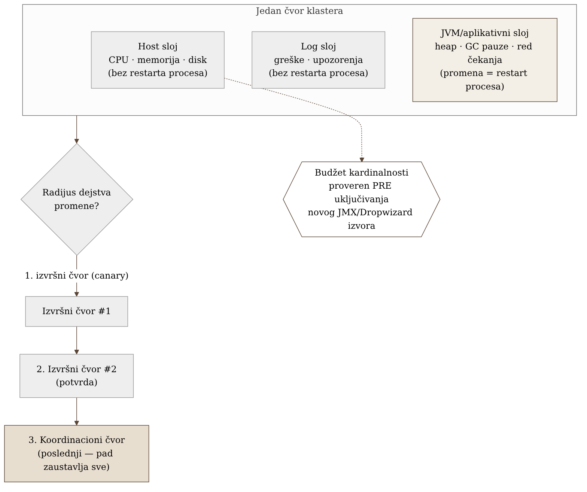
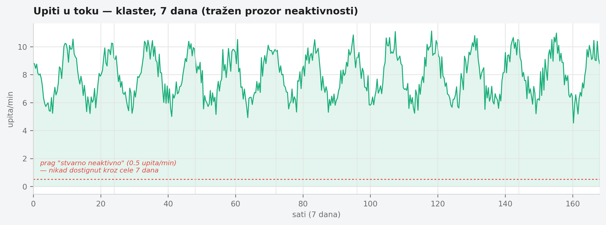

Poglavlje 19 — Samostalno upravljani distribuirani sistemi (klaster tipa Dremio)
Orkestar ne zvuči dobro zato što svaki muzičar pojedinačno svira glasno. Zvuči dobro zato što tri odvojene stvari rade zajedno: svaki instrument mora biti naštiman i u ispravnom stanju (violina koja je raštimovana kvari utisak bez obzira koliko dobro ostatak orkestra svira), notni zapis mora biti tačno ono što se svira u tom trenutku (dirigent koji vodi po pogrešnoj partituri neće to primetiti dok se muzika ne raspadne), i, na kraju, publika mora stvarno čuti ono što je odsvirano — akustika sale, mikrofoni, pojačala su treći, potpuno odvojen sloj koji može pokvariti savršen nastup i pre nego što stigne do ušiju. Dirigent koji upravlja samo jednom od te tri stvari upravlja pogrešnom trećinom orkestra. I kad menadžment sale predloži da se orkestar raspusti u dane kad nema koncerta da bi se uštedelo na platama — dirigent zna nešto što menadžment ne zna: orkestar koji se svaki put iznova sastavlja nikad neće zvučati kao orkestar koji svira zajedno već godinama. Ponekad je jeftinije držati ga sastavljenim, manjim, nego rasformirati pa ponovo okupljati.
19.1 Pitanje na koje ovo poglavlje odgovara
Klaster koji tim sam instalira, konfiguriše i drži živim — bez provajdera koji upravlja njime — traži nadzor na tri nivoa istovremeno, od kojih svaki ima drugačiju cenu pada i drugačiju cenu restarta. Kako se ta tri nivoa drže odvojenim a ipak čitaju zajedno, i zašto najočiglednija poluga za uštedu — ugasi kad se ne koristi — ovde jednostavno ne radi?
19.2 Kako je to urađeno — praktičan pregled
Trostruki signal po čvoru
Svaki čvor u klasteru koji implementacija prati nosi tri nezavisna sloja posmatranja, sa različitom cenom ponovnog pokretanja ako signal iz tog sloja pokaže problem:
- Host sloj — CPU, memorija, disk, mreža same mašine na kojoj čvor radi. Problem ovde (disk pun, memorija na ivici) ne zahteva restart procesa da bi se prijavio — vidljiv je spolja, nezavisno od toga da li je aplikacija uopšte živa.
- Log sloj — tekstualni izlaz iz procesa: greške, upozorenja, tragovi izuzetaka. Kao i host sloj, log se piše bez obzira na to da li je aplikacija u tom trenutku zdrava — proces koji se gasi zbog greške i dalje stigne da zapiše zašto, u poslednjoj sekundi života.
- JVM i aplikativne metrike — hip memorija, pauze za sakupljanje smeća, broj aktivnih upita, red čekanja. Ovaj sloj zahteva da agent za prikupljanje bude ugrađen u sam proces ili da proces eksportuje metrike aktivno — što znači da promena ovog sloja gotovo uvek zahteva restart procesa da bi se primenila, za razliku od prva dva sloja koja se mogu menjati bez dodirivanja aplikacije.
Ova razlika u ceni promene — dva sloja se mogu podesiti bez restarta, treći gotovo nikad — direktno diktira redosled uvođenja bilo koje nove provere ili praga: prvo host i log, tek onda, pažljivije, JVM/aplikativni sloj.
Redosled uvođenja promena po radijusu dejstva
Kada implementacija uvodi bilo koju promenu na klasteru — novu verziju, novi prag alarma, novu konfiguraciju — redosled kojim se promena širi kroz čvorove je namerno poređan po tome koliko štete pravi ako nešto pođe naopako:
- Jedan izvršni čvor, najmanjeg uticaja — ako nešto pukne, klaster nastavlja da radi sa preostalim kapacitetom.
- Drugi izvršni čvor, potvrda da prvi rezultat nije bio slučajnost.
- Koordinacioni čvor, poslednji — jer njegov pad utiče na ceo klaster odjednom, ne na jedan deo kapaciteta.
Ovaj redosled nije proizvoljan izbor — direktno odražava topologiju: izvršni čvorovi su zamenjivi i njihov pojedinačni gubitak je apsorbovan, koordinacioni čvor nije, i njegov gubitak zaustavlja sve.
Merenje pre pretpostavke: da li automatsko gašenje uopšte radi ovde
Standardna poluga za uštedu troška na uvek-uključenim klasterima je automatsko gašenje tokom perioda niske aktivnosti. Implementacija je ovo izmerila, ne pretpostavila — i otkrila da klaster koji prati gotovo nikad nema stvaran prozor neaktivnosti dovoljno dugačak da opravda gašenje: čak i u satima najniže aktivnosti, dolazi dovoljno upita da bi gašenje značilo ili odbijanje tih upita ili kašnjenje merano minutima dok se klaster ponovo diže. Umesto gašenja, prava poluga koja se pokazala delotvornom bila je veličina — smanjivanje broja i tipa čvorova na osnovu izmerene stvarne potrošnje, ne na osnovu pretpostavljenog vršnog opterećenja. Ovo je bitna razlika: posmatranje nije samo promenilo dashboard, promenilo je odluku — sa "kada gasimo" na "koliko nam stvarno treba upaljeno."
Budžet kardinalnosti pre uključivanja novog izvora metrika
Pre nego što se bilo koji novi eksporter na nivou čvora ili JVM-a uključi, implementacija prvo procenjuje koliko novih vremenskih serija taj izvor donosi — jer pojedini standardni formati metrika (posebno oni izvedeni iz JMX stabla atributa) mogu generisati porodice metrika sa histogramskim kantama po niti, po konekciji, ili po upitu, koje bez pažnje eksplodiraju u broju serija mnogo brže nego što izgleda iz same konfiguracije. Jedan konkretan slučaj u implementaciji: uključivanje jednog naizgled bezazlenog izvora metrika je za sebe udvostručilo ukupan broj aktivnih serija u klasteru pre nego što je iko stigao da ga ograniči — otkriveno tek kad je mesečni račun za metrike skočio, ne pre.


19.3 Analitički deo — zašto standardna poluga ovde ne radi
FinOps standard poređa poluge, ali i sam upozorava na granice
Zvanična FinOps preporuka za kontrolu troška računarskih resursa poređa standardne poluge u uobičajenom redosledu primene: prvo prilagođavanje veličine na osnovu izmerene potrošnje (jer ne zahteva arhitekturnu promenu), zatim automatsko skaliranje za opterećenja koja su stvarno promenljiva i prate potražnju, tek onda vremenski zakazano gašenje — i to eksplicitno opisano kao poluga za razvojna i test okruženja van radnog vremena, ne za produkcione sisteme sa stalnim opterećenjem. Ovo se tačno poklapa sa nalazom implementacije: gašenje kao standardna preporuka i dalje postoji, ali je po sopstvenoj definiciji ograničeno na okruženja koja nemaju obavezu da rade neprekidno — što ovaj klaster, po izmerenom obrascu saobraćaja, jednostavno nije.
Sam proizvođač potvrđuje: gašenje je za povremeno, ne za stalno opterećenje
Zvanična dokumentacija upravljane verzije istog sistema tretira automatsko zaustavljanje kao prvoklasnu funkciju — ali samo za elastične resurse konfigurisane sa minimalno nula stalno aktivnih instanci, i eksplicitno preporučuje suprotno (najmanje jedna instanca uvek aktivna) da bi se "garantovala niska latencija izvršavanja upita." Ovo je direktna, zvanična potvrda da automatsko gašenje nije univerzalno dobra praksa — ono je izbor koji zavisi od oblika opterećenja, i sam proizvođač sistema to kaže. Za sistem samostalno upravljan, bez elastičnog sloja koji bi automatski apsorbovao ponovno pokretanje, dokumentacija ide dalje: pokretanje i gašenje čvorova je opisano kao strog, ručni, poređan postupak — bez ugrađenog mehanizma za očuvanje stanja ili automatsko preraspoređivanje. Samo postojanje tako strogog, ručnog redosleda je posredna, ali jasna potvrda da je gašenje ovde tretirano kao operativno rizično, ne kao rutinska ušteda.
Standardni troslojni obrazac postoji, ali pod drugim imenom
Ne postoji jedan kanonski, imenovan "troslojni" standard u literaturi o observability-ju — ali sam obrazac (host metrike → JVM/runtime metrike → log/aplikativni signal, kao tri odvojene kategorije) redovno se pojavljuje u vodičima za nadzor tačno ove klase sistema: distribuirani, JVM-zasnovani klasteri sa koordinacionim i izvršnim ulogama. Ovo je uža i tačnija paralela implementaciji nego opštija podela na "metrike, logove i tragove" koja se često navodi kao standard observability-ja — ta podela je zasnovana na tipu podataka, ne na sloju sistema koji se posmatra, i ne mapira se direktno na razliku host/JVM/log koju implementacija koristi.
Cardinality budžetiranje kao dokumentovan, konkretan rizik
Zvanična preporuka pre uvođenja novog eksportera je da se prvo stekne uvid u postojeće serije i identifikuju "visoko-kardinalne, niskovredne" metrike pre dodavanja novih izvora — sa konkretnim brojevima koji pokazuju da čak i uobičajeni eksporteri po difoltu nose stotine do hiljadu serija, od kojih nisu sve vredne cene. Ovo direktno potvrđuje nalaz implementacije: JMX/ Dropwizard stabla atributa mogu izložiti atribute po niti, po konekciji, ili po identifikatoru upita, koji se pretvaraju u neograničenu kardinalnost tačno onda kada se skrejpuju bez eksplicitne liste dozvoljenih metrika.
Kontrafaktički scenario: šta bi udžbenički pristup uradio
Zamislimo tim koji je, bez merenja, primenio "standardnu" preporuku: automatsko gašenje van radnog vremena, po analogiji sa razvojnim okruženjima. Prvih nekoliko noći bi verovatno prošlo bez primetnog problema — dovoljno tiho da se odluka proglasi uspešnom. Ali čim bi se pojavio, makar i redak, upit u tom "mirnom" prozoru, korisnik bi čekao minutima dok se klaster ponovo digne — a bez merenja koje je implementacija stvarno sprovela, niko ne bi znao da li je takvih upita bilo dovoljno da gašenje uopšte bude isplativo, ili je samo premestilo trošak sa računa za infrastrukturu na trošak strpljenja korisnika koji čeka.
Vratimo se orkestru s početka poglavlja. Menadžment sale koji predlaže raspuštanje orkestra između koncerata gleda samo na jednu liniju budžeta — platu za dane bez nastupa. Dirigent koji odbija tu ideju ne brani udobnost muzičara; brani nešto teže vidljivo na tabeli: orkestar koji se svaki put iznova sastavlja gubi uigranost, i ta izgubljena uigranost ima cenu koja se ne vidi dok se ne pojavi loš nastup. Prava ušteda nije bila u raspuštanju — bila je u tome da orkestar bude tačno onoliko veliki koliko mu stvarno treba, ni manje ni više, i da ostane sastavljen.
19.4 Skupljena pravila iz ovog poglavlja
- Prati samostalno upravljan klaster kroz tri nezavisna sloja — host, log, JVM/aplikativne metrike — i imaj na umu da promena trećeg sloja gotovo uvek zahteva restart procesa, dok prva dva ne.
- Uvodi promene po radijusu dejstva: zamenjivi izvršni čvorovi prvi, koordinacioni čvor poslednji — jer njegov pad zaustavlja ceo klaster, dok pad jednog izvršnog čvora apsorbuje preostali kapacitet.
- Ne pretpostavljaj da automatsko gašenje tokom neaktivnosti radi — izmeri da li stvaran prozor neaktivnosti uopšte postoji pre nego što uvedeš tu polugu, jer opterećenje bez pravih praznina čini gašenje skupljim od toga da ostane upaljeno.
- Kad prava neaktivnost ne postoji, poluga za trošak je veličina, ne raspored rada — smanji kapacitet na osnovu izmerene potrošnje umesto da ga uključuješ i isključuješ.
- Proceni koliko novih vremenskih serija donosi svaki novi izvor metrika pre nego što ga uključiš, posebno za JMX/Dropwizard porodice — one mogu udvostručiti ukupnu kardinalnost pre nego što iko stigne da to primeti.
19.5 Vežba za čitaoca
Pronađi jedan sistem u svom okruženju koji trenutno ima automatsko gašenje ili skaliranje na nulu tokom perioda "niske aktivnosti," a čija je ta odluka doneta bez stvarnog merenja prozora neaktivnosti. Izvuci sedmodnevni grafik njegove aktivnosti i proveri: da li prozor neaktivnosti stvarno postoji, dovoljno dugačak da opravda gašenje — ili je pretpostavka o "mirnom periodu" samo pretpostavka?